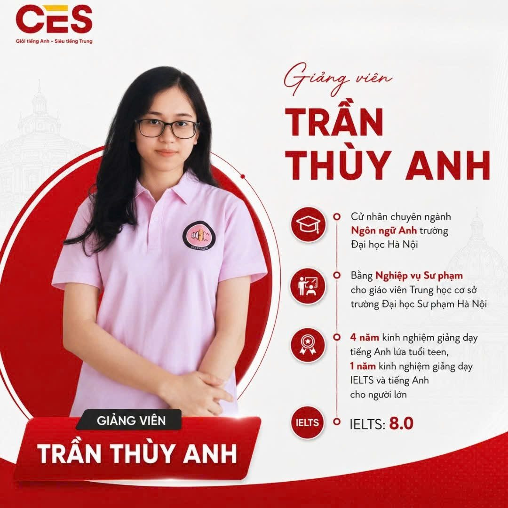

Luyện thi IELTS mọi mốc band
Quản Gia Học Tập CES
Bạn không học chậm. Lộ trình của bạn đang đứng yên.
IELTS Quản Gia thiết kế lộ trình riêng theo band hiện tại, mục tiêu và quỹ thời gian của bạn, rồi điều chỉnh liên tục theo năng lực thật. Tiến bộ nhanh, bạn được bứt lên giai đoạn mới. Hụt nhịp, bạn được vá đúng chỗ trước khi đi tiếp.
- Chặng 1Nền tảng ngữ pháp và từ vựng theo chủ đề
- Test mốc 1Listening, Reading vượt mốc dự kiến
- Chặng 2
Listening và Reading cơ bản→ chuyển thẳng sang luyện đề - Chặng 3Writing Task 1 và Task 2+ dồn thêm giờ cho Speaking
- Chặng 4
Ôn tổng hợp→ về đích sớm, thi thử đủ 4 kỹ năng
- Giáo viên trình độ cao
- Cam kết đầu ra
- Lộ trình xem lại sau mỗi bài test
IELTS
Quản Gia Học Tập CES
Bạn có đang ở một trong 5 tình huống này?
Dù bạn đang ở đâu, lộ trình IELTS cần bắt đầu từ chính năng lực của bạn.
- Học mãi vẫn kẹt bandCần tìm đúng điểm nghẽn để cải thiện.
- Cần IELTS cấp tốcCó deadline, không thể học dàn trải.
- Học sinh THPT hướng tới đại họcCần chứng chỉ để mở rộng cơ hội xét tuyển.
- Chuẩn bị du họcCần đạt band phù hợp với yêu cầu hồ sơ và kỳ nhập học.
- Muốn bứt phá band điểmCó tiềm năng tiến nhanh hơn và cần lộ trình đủ linh hoạt.
Học phân mảnh
Học trên lớp, tự học, bài tập, kiểm tra và hỗ trợ ngoài giờ diễn ra rời rạc. Mỗi người chỉ nhìn thấy một phần. Không ai chịu trách nhiệm cho cả hành trình đến band điểm bạn cần.
- Học trên lớp
- Tự học
- Bài tập
- Kiểm tra
- Hỗ trợ ngoài giờ
“Bạn không thiếu lớp học. Bạn thiếu một hệ thống theo sát mục tiêu.”
Cách CES làm IELTS
Ở CES, lộ trình là công cụ mở, năng lực của bạn mới là giá trị cốt lõi.
Quản Gia Học Tập không bắt đầu bằng câu hỏi bạn vào lớp nào. Chúng tôi bắt đầu bằng một câu hỏi khác:
“Để đạt band này trong khoảng thời gian này, bạn cần lộ trình và những nguồn lực nào?”
Từ đó, một hệ thống được tổ chức quanh riêng bạn. Mỗi bài test trả lời ba câu: bạn đang ở đâu, đang thiếu gì, và tuần tới nên học gì. Lộ trình được viết lại theo câu trả lời đó.
- Học trên lớp
- Tự học
- Bài tập
- Kiểm tra
- Hỗ trợ ngoài giờ
- Một cá nhân.
- Một mục tiêu.
- Một lộ trình linh hoạt.
Điểm khác biệt
3 điều khác biệt về lớp IELTS mà chỉ CES mới có.
-
May đo
Lộ trình viết riêng, không phải lộ trình may sẵn
Band hiện tại, band mục tiêu, hạn thi và số giờ bạn có mỗi tuần quyết định lộ trình. Dù bạn mới bắt đầu hay đang nhắm 7.0, bạn nhận một lộ trình viết cho đúng điểm xuất phát của mình. Cần gấp trong ba tháng? Đó là một lộ trình cấp tốc viết riêng cho ba tháng đó, không phải một suất trong lớp có sẵn.
-
Tự điều chỉnh
Lộ trình đổi theo bạn ngay trong lúc học
Bạn tiếp thu nhanh, lộ trình chuyển sớm sang giai đoạn mới để bạn về đích sớm hơn. Bạn chưa theo kịp, lộ trình chậm lại và vá lỗ hổng trước. Lúc nào bạn cũng học đúng phần kiến thức vừa với năng lực hiện tại.
-
Đúng cách học
Phương pháp được tìm cho riêng bạn
Có người lên Speaking nhờ luyện phản xạ mỗi ngày mười phút. Có người lên Writing nhờ rèn tư duy logic, đơn giản hóa vấn đề. Giáo viên thử, đo và giữ lại cách học giúp bạn bứt tốc nhanh nhất ở từng kỹ năng.
Đây là mô hình Quản gia 3T áp dụng cho IELTS: tổ chức đúng nguồn lực, theo sát từng cá nhân, test sớm để điều chỉnh sớm.
Mọi mốc band
Bắt đầu đúng nơi bạn đứng, chạm tới nơi bạn mơ.
Từ mới bắt đầu đến 7.5+, mốc nào cũng mở đầu bằng một bài đánh giá và một lộ trình riêng. Chọn band hiện tại và band mục tiêu để xem bạn sẽ đi qua những chặng nào.
- Bắt đầu → 4.0
Xây nền
Phát âm, ngữ pháp cốt lõi, từ vựng theo chủ đề và làm quen với dạng bài của bốn kỹ năng.
- 4.0 → 5.0
Vững bốn kỹ năng
Nghe và đọc nắm được ý chính, viết được đoạn văn với câu phức, nói trọn ý trong các chủ đề quen thuộc.
- 5.0 → 6.0
Chiến lược từng dạng bài
Cách xử lý từng dạng câu hỏi, kỹ năng paraphrase, bố cục Writing Task 1 và Task 2, nói mạch lạc ở Speaking Part 2.
- 6.0 → 7.0
Học thuật và chiều sâu
Từ vựng học thuật và collocation, lập luận có chiều sâu, giảm lỗi lặp lại, xử lý các dạng khó của Reading và Listening.
- 7.0 → 7.5+
Tinh chỉnh để bứt band
Soi bài theo từng tiêu chí chấm, tăng độ chính xác và tự nhiên, luyện đề cường độ cao trong điều kiện thi thật.
Trọng tâm trên là định hướng chung của từng chặng. Lộ trình thật của bạn được viết sau bài đánh giá, theo điểm xuất phát, hạn thi và quỹ thời gian của bạn.
Lộ trình thay đổi như thế nào
Cùng điểm xuất phát, cùng mục tiêu. Hai học viên, hai hành trình.
Cả hai bắt đầu cùng tuần, cùng band, cùng lộ trình. Đến bài test đầu tiên, lộ trình của họ rẽ làm hai. Biểu đồ đang lấy ví dụ theo mốc 5.0 lên 6.5 bạn chọn ở trên.
Biểu đồ minh họa cách lộ trình được điều chỉnh, không phải dữ liệu của học viên cụ thể.
Học viên tiến bộ nhanh
- Bài test cho thấy
- Listening và Reading chạm band mục tiêu sớm hơn dự kiến.
- Lớp thông thường sẽ
- Giữ nguyên tiến độ, học lại phần đã vững.
- Quản gia điều chỉnh
- Chuyển sớm sang giai đoạn luyện đề, dồn giờ cho Writing và Speaking.
- Kết quả
- Về đích sớm, hoặc nâng mục tiêu lên band cao hơn.
Học viên hụt nhịp
- Bài test cho thấy
- Writing đứng yên vì hổng câu phức.
- Lớp thông thường sẽ
- Dạy tiếp bài mới, lỗ hổng lớn dần.
- Quản gia điều chỉnh
- Dừng bài mới, dành thời gian vá ngữ pháp và đổi cách luyện viết.
- Kết quả
- Đi tiếp trên nền đã vững, vẫn hướng tới band mục tiêu đúng hạn.
Tốc độ của bạn, hành trình của chúng tôi: Mọi vấn đề luôn có cách giải quyết.
Đội ngũ
Giáo viên giỏi là điều kiện cần. Hệ thống QUẢN TRỊ đứng sau giáo viên mới là điều kiện đủ.
Giáo viên IELTS tại CES có trình độ chuyên môn cao và kinh nghiệm luyện thi. Nhưng chúng tôi không bán một người dạy. Chúng tôi tổ chức cả một hệ thống hỗ trợ quanh bạn.
- Giáo viên chuyên mônDẫn dắt chiến lược làm bài và chữa bài chi tiết.
- Giáo viên nước ngoàiLuyện Speaking và phản xạ trong tình huống thật.
- Trợ giảngTheo sát bài tập và nhắc tiến độ hằng tuần.
- Học liệu và phần mềmChọn theo band và điểm yếu của riêng bạn.
- Luyện đềThi thử định kỳ trong điều kiện sát thi thật.
- Hỗ trợ ngoài giờCó người trả lời khi bạn vướng bài lúc tự học.
Bạn không nhất thiết dùng cả sáu. Hệ thống chỉ tổ chức đúng những nguồn lực mục tiêu của bạn cần.
Giảng viên IELTS
Những người cầm bút đỏ sửa lộ trình cùng bạn.
IELTS 8.0 đến 8.5, tốt nghiệp Đại học Hà Nội, Thạc sĩ Giáo dục UCL. Chạm vào thẻ để lật xem hồ sơ, hoặc mở ảnh lớn.
-
IELTS 8.5Chạm để lật ↻IELTS 8.5
Lê Trần Ngọc Diệp
- Cử nhân tốt nghiệp Xuất sắc ngành Ngôn ngữ Anh, Đại học Hà Nội, khóa 2021–2025
- 4 năm kinh nghiệm giảng dạy tiếng Anh phổ thông, giao tiếp và luyện thi IELTS
-
IELTS 8.5Chạm để lật ↻IELTS 8.5
ThS. Vũ Thị Hồng Duyên
- Thạc sĩ Giáo dục tại UCL, đại học top 1 thế giới về Education
- 6 học bổng toàn phần, du học và làm việc tại 4 châu lục
- Chủ biên sách “English Vocab Hacking”, NXB MCBooks
- 10+ năm giảng dạy và phát triển phương pháp IELTS
-

IELTS 8.0Chạm để lật ↻IELTS 8.0Trần Thùy Anh
- Cử nhân chuyên ngành Ngôn ngữ Anh, Đại học Hà Nội
- Bằng Nghiệp vụ Sư phạm cho giáo viên THCS, Đại học Sư phạm Hà Nội
- 4 năm dạy tiếng Anh lứa tuổi teen, 1 năm dạy IELTS và tiếng Anh cho người lớn
-
IELTS 8.0Chạm để lật ↻IELTS 8.0
Trần Thiên Trang
- Tốt nghiệp trường Đại học Hà Nội (HANU)
- 3 năm kinh nghiệm giảng dạy IELTS
Cam kết đầu ra
Cam kết gắn với mỗi band điểm.
Sau buổi đánh giá, band mục tiêu và thời hạn của bạn được xác định rõ. Bạn biết mình sẽ đạt gì, trong bao lâu, trước khi quyết định học.
Cam kết đi kèm điều kiện về chuyên cần và bài tập, được nêu rõ trước khi bạn đăng ký. Chúng tôi nói thẳng điều này vì kết quả là việc hai bên cùng làm.
- Mục tiêu minh bạchBand đầu ra và mốc kiểm tra của từng giai đoạn được thống nhất ngay từ đầu.
- Tiến độ nhìn thấy đượcBạn nhận kết quả phân tích sau mỗi bài test, không đợi đến ngày thi mới biết.
- Chủ động điều chỉnhKhi kết quả lệch khỏi mục tiêu, CES phân tích nguyên nhân và đổi lộ trình, cách luyện hoặc người hỗ trợ.
- Báo cáo đều đặn cho phụ huynhKết quả học tập được cập nhật hằng tuần và hằng tháng, phụ huynh luôn biết con đang ở đâu.
Kết quả học viên CES
Những tin nhắn khiến cả đội ngũ vỡ òa.
Ảnh chụp kết quả thi và lời nhắn học viên, phụ huynh gửi về CES. Vuốt hoặc bấm mũi tên để xem, chạm vào ảnh để phóng to.
- 9.0Listening và Reading
- 8.0Overall IELTS
- W 7.0Retake Writing, kéo Overall lên 7.0
- UKHọc bổng Chevening
Quy trình
Bốn bước từ hôm nay đến band điểm bạn cần.
Đánh giá năng lực
Bạn làm bài kiểm tra bốn kỹ năng và trao đổi về mục tiêu, hạn thi, quỹ thời gian.
Nhận lộ trình riêng
CES phân tích lỗ hổng, đề xuất lộ trình, đội ngũ và học phí rõ ràng trước khi bạn quyết định.
Học cùng hệ thống
Giáo viên, trợ giảng và học liệu được tổ chức theo đúng lộ trình của bạn.
Test, điều chỉnh, về đích
Sau mỗi mốc kiểm tra, lộ trình được xem lại để bạn luôn học đúng phần mình cần.
Hỏi đáp
Những điều bạn muốn hỏi trước khi bắt đầu.
Lộ trình riêng có nghĩa là học một kèm một?
Không nhất thiết. Hình thức học và số giáo viên phụ thuộc vào mục tiêu và hiện trạng của bạn. Điều riêng là lộ trình: bạn học gì, theo thứ tự nào, với tốc độ nào.
CES nhận học viên ở những mốc nào?
Từ mới bắt đầu đến mục tiêu 7.5+. Mốc nào cũng mở đầu bằng bài đánh giá và một lộ trình viết riêng cho điểm xuất phát đó.
Tôi cần tăng 1.0 band trong ba tháng. Có khả thi không?
Câu trả lời nằm ở bài đánh giá đầu vào. Nếu khả thi, bạn nhận một lộ trình cấp tốc viết riêng cho ba tháng đó. Nếu chưa, CES nói thẳng mốc thực tế hơn và lý do.
Khi nào lộ trình được xem lại?
Sau mỗi bài test định kỳ. Khi kết quả cho thấy bạn nhanh hơn, chậm hơn hoặc có lỗ hổng mới, nội dung, tốc độ hoặc nguồn lực sẽ được điều chỉnh.
Nếu tôi học chậm hơn dự kiến thì sao?
CES phân tích nguyên nhân trước, rồi mới đổi lộ trình, cách luyện tập hoặc người hỗ trợ. Bạn không bị kéo đi tiếp khi nền chưa vững.
Cam kết đầu ra cụ thể là gì?
Band mục tiêu và thời hạn được xác định sau buổi đánh giá, kèm điều kiện về chuyên cần và bài tập. Bạn nhận đầy đủ thông tin này trước khi đăng ký.
Tôi học trực tiếp hay trực tuyến?
Cả hai đều được. Hình thức được thiết kế theo điều kiện của bạn và có thể kết hợp với hỗ trợ ngoài giờ.
Học phí bao nhiêu?
Học phí phụ thuộc vào mục tiêu, thời gian và nguồn lực cần tổ chức. Bạn nhận đề xuất rõ ràng sau buổi đánh giá, trước khi quyết định.